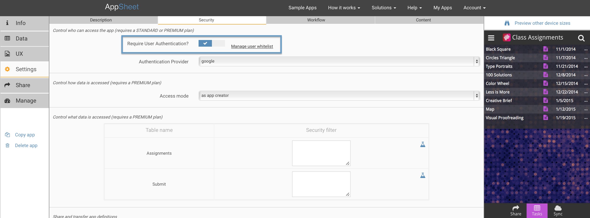
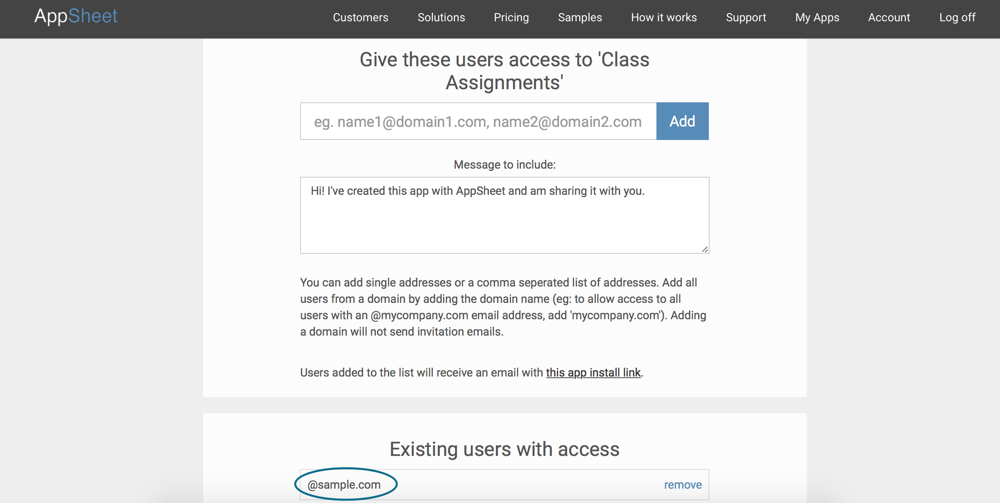
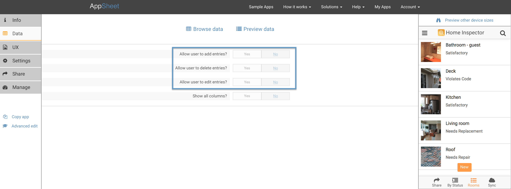
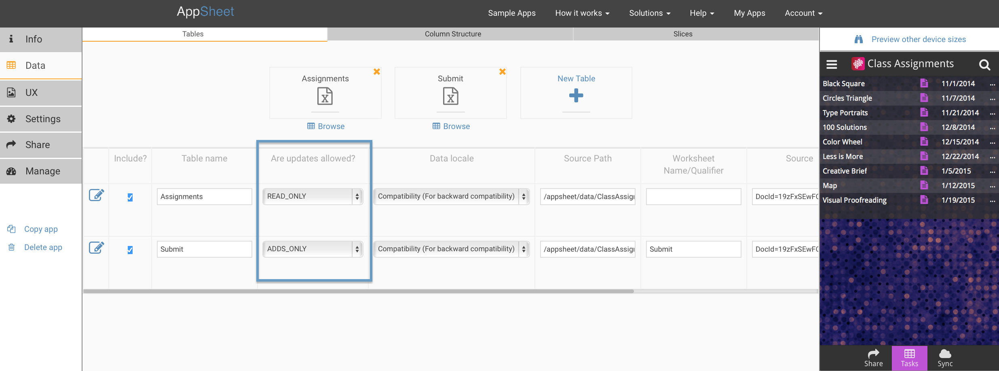
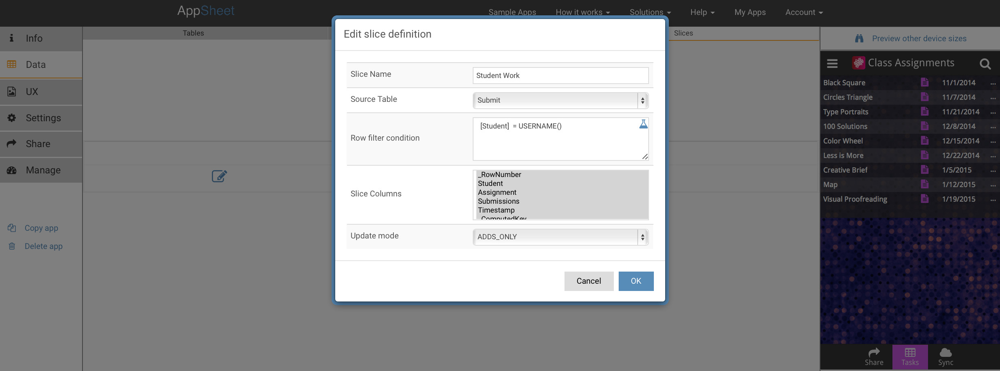
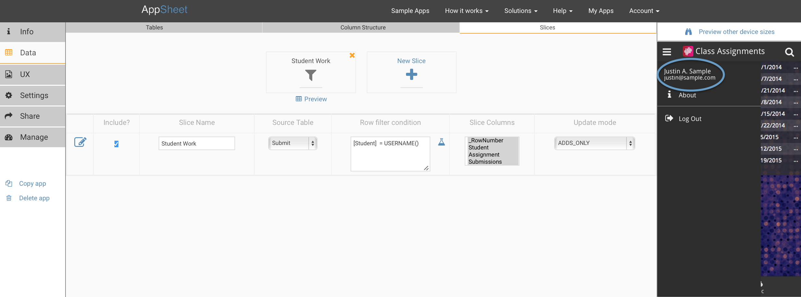
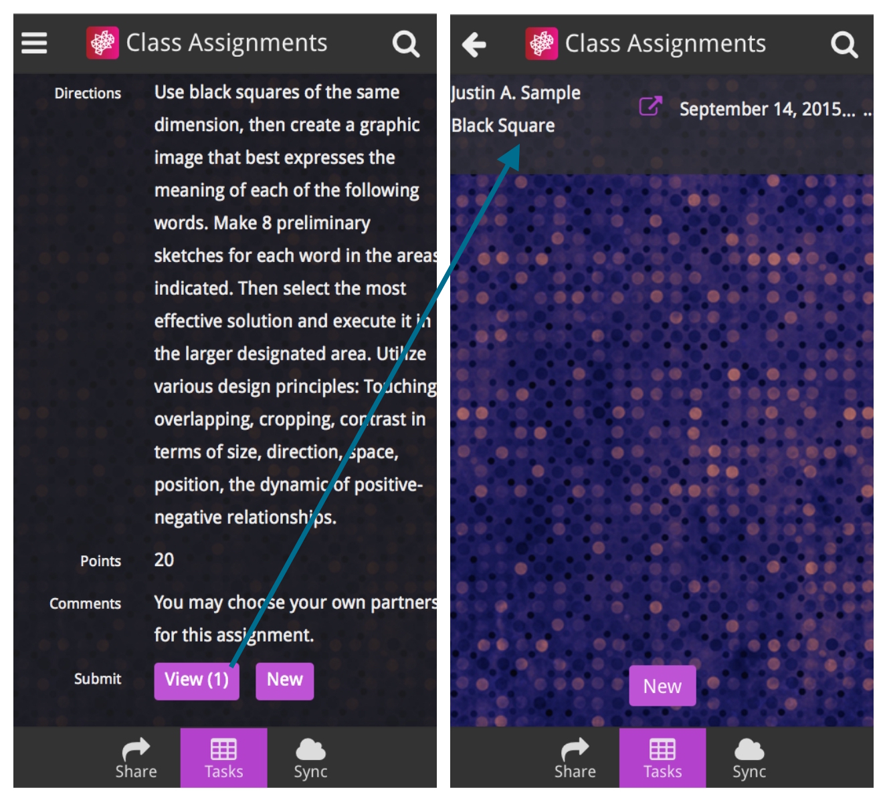

How do I design a secure app? – AppSheet
Apps created with AppSheet are secure because of the architecture of AppSheet, because of the underlying security infrastructure of cloud and mobile technology, and because of security options in your control.
First, let's quickly summarize the AppSheet architecture from a security point of view:
- Cloud data: Your data is stored in your cloud data provider (Google Drive, Dropbox, Box, Smartsheet, Office365, etc). AppSheet does not store your data.
- Authorization: As explained in another section, when creating an application, you sign into AppSheet with your cloud storage account and give AppSheet the permission to read and write your cloud storage data on your behalf. The industry standard OAuth protocol is used in this process.
- Apps get built based on the cloud data: The application you create is saved to an application definition that is maintained by AppSheet in a secure cloud database. Communication between the AppSheet cloud service and your cloud storage provider uses secure web protocols (HTTPS).
- The apps run on a mobile device: Communication between the mobile device and the AppSheet cloud service uses secure web protocols (HTTPS).
- Local data storage: The application definition and all the necessary data is copied to the mobile device and securely stored locally on the device using HTML5 local storage.
- Data synchronization: When you add, update, or delete data via the AppSheet application running on your mobile device, all changes you make are saved to your cloud data provider. The AppSheet cloud service acts as a go-between to connect the mobile app with the cloud data provider used by your app.
You may have the following security questions about each of these aspects of AppSheet-- we answer each of them in this article:
- Who can access my cloud data directly?
- Who can access my app and how do I control that?
- Do the users of my app also need to have access to my spreadsheet in cloud storage?
- What can users do with my app? Can they delete my data?
- Can I limit the data that specific users of the app can see?
- Can I limit the actions or capabilities that specific users of the app can do?
- Who can access the data on the mobile device?
- What happens if an app user leaves my organization and I want them to stop using my app?
I will explain these topics using a fictional app created by a teacher to distribute and collect assignments from her students in a graphic design class.
Who can access my cloud data directly?
No other AppSheet user can access your cloud data directly-- that permission lives solely with you (and whoever else has your cloud account's login info).
Depending on the update permissions you have enabled in the app, the users of your app may be able to add, edit, or delete values that live in your cloud-hosted spreadsheets and that are exposed via the apps you build with AppSheet. You can control these permissions as described later in this article.
The AppSheet cloud service has permissions to act on your behalf to read and write your cloud data. These permissions are only used for the specific purposes of app creation and app execution. AppSheet does not save copies of your data. Furthermore, because of the way the OAuth protocol works, you can at any time decide to disable the access permissions granted to AppSheet.
Who can access my app and how do I control that?
You probably want to control who has access to your app-- I'll use the Class Assignments app to show how to do this. I want to ensure that only authorized students from my school can download and use the app. I can do this from the Advanced Editor>Settings>Security pane, by clicking the Require User Authentication checkbox:

The whitelist is a list of users or a full domain you have permitted to access the app. You'll see that I've added a full domain (in this case, all students with a @sample.com subdomain), as well as a message that is included in the install link email that is sent when I click add.
AppSheet does not maintain its own user registry with usernames and passwords. Instead, your users will sign in using a standard cloud provider such as Google, Dropbox, Office365, Box, or Smartsheet. By default, we assume that your users will sign in using the same cloud provider that you use for your cloud storage. For example, if you use Google Drive, your app will be configured to ask your users to sign in with their Google accounts. AppSheet matches the email address of the application user's Google account with the list of allowed email addresses you specify in the white list. The user is permitted to use your app if the user's email address appears in the white list.
If you wish, your can require users to sign in using a different cloud provider that you use for your cloud storage. For example, you might require your users to sign in via Dropbox even though you use Google as your cloud storage provider. You can specify the sign in provider using the Advanced Editor. Open the Advanced Editor, select the "Settings" tab, select the "Security" tab, and select the appropriate authentication provider from the "Authentication Provider" drop down list.
If you wish, you can allow users to sign in using any of the cloud providers. For example, you may wish to allow users to sign in using either Google, Office365, or Smartsheet. To do this, open the Advanced Editor, select the "Settings" tab, select the "Security" tab, and select the blank authentication provider appearing at the top of "Authentication Provider" drop down list. This will enable your users to sign in with any of the standard cloud provider including Google, Dropbox, Office365, Box, and Smartsheet.

In the rest of this article, I'll assume that you are utilizing the whitelist to limit access to specific app users.
Do the users of my app also need to have access to my spreadsheet in cloud storage?
No. If you are the app creator, and you have access to the spreadsheet that the app is based on, you can distribute your app to other people who do not have direct access to that data. This works because the default execution mode ('as app creator'), instructs AppSheet to access data using the identity of the app creator. (Note: in certain advanced scenarios, you can specify the app to run as the app user. Find out more in this section).
What can users do with my app? Can they delete my data?
As the app creator, you have full control over what kinds of changes users can make to the data in your app, or whether they can make changes at all. You may want a unique combination of permissions: for example, you might want users to be able to add and update data, but not delete data. Or, you may want users to have the ability to add new data, but not update or delete data. Any combination is allowed. You can do this in both the Basic and Advanced Editors.
Basic Editor

Advanced Editor

Can I limit the data that specific users of the app can see?
Users of your app can only see data that you choose to expose through the app. In fact, you might want certain classes of users to only have access to view specific subsets of data, and other users to different data. You can do this using slices.
In the case of the Class Assignments app, I want to make sure that students can submit completed work and continue to view past submissions, but I don't want them to be able to see the completed work of other students. The best way to do this is to create a slice that shows only the assignments of the logged-in user. I'll do this from the Advanced Editor>Data>Slices tab, then clicking +Slice.

First I'll need to name my slice and then specify a few parameters. In this case I'll want to choose the Submit table so new submissions will end up there. I'll also want to make sure students can only add submissions, and not delete or edit-- so I'll choose ADDS_ONLY as the update mode for the slice.
In order to make sure logged-in students can only see their own present and past submissions, I need to filter based on the Student column. Since I required sign-in for the app, my filter condition should be Matches user name-- the app will then only show data that matches the current logged-in user's name.
You'll see then, in the hamburger menu, that the current logged-in user's name shows up.

You'll see below how the slice ensured Justin A. Sample would only be able to view his own past assignments.

Can I limit the actions or capabilities that specific users of the app can do?
All users of the same app will have the same editing, updating, or deleting capabilities. However, if you'd like different classes of users to have different permissions, the best approach is to create different apps for each user with the corresponding permissions levels. Each app would be tied to the same source spreadsheet. Creating a new app takes just a minute, especially if you start by copying an existing working app.
Who can access the data on the mobile device?
On the mobile device, AppSheet uses industry-standard "local storage" technology associated with web browsers (web browser technology is embedded inside the AppSheet mobile app and the actual implementation largely utilizes HTML5 technology). Since you require users to sign in to access your app, each user's data is isolated from any other user's data. Even were multiple users to use your app from the same device, their data would be isolated as long as they sign into the device as different users. In short, if you follow standard security practices on the device (users sign in with passwords), your app will be as secure as all other apps based on web technologies.
What happens if an app user leaves my organization and I want them to stop using my app?
At any time, you can return to the user whitelist and remove any users you've previously added. Any subsequent actions by the removed user from their mobile app will fail when the actions engage with the AppSheet cloud service (typically when synchronizing or saving data).
As an extreme measure, you could also make a copy of the app and delete the old one. The old one will stop working and then you can control access to the new one. You'll need to make sure to redistribute the new app link to the other users who still need access.
You can find out more about security in our Security and Reliability section.